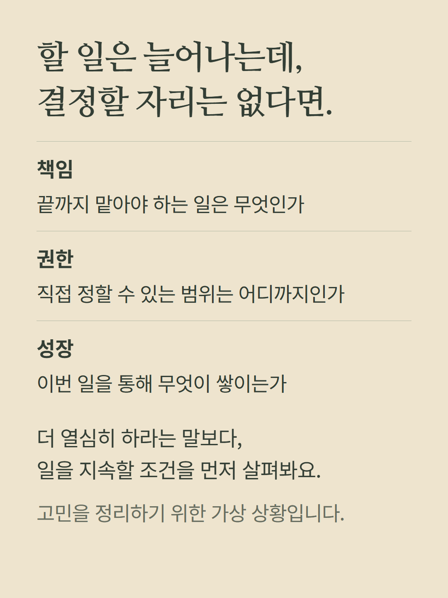
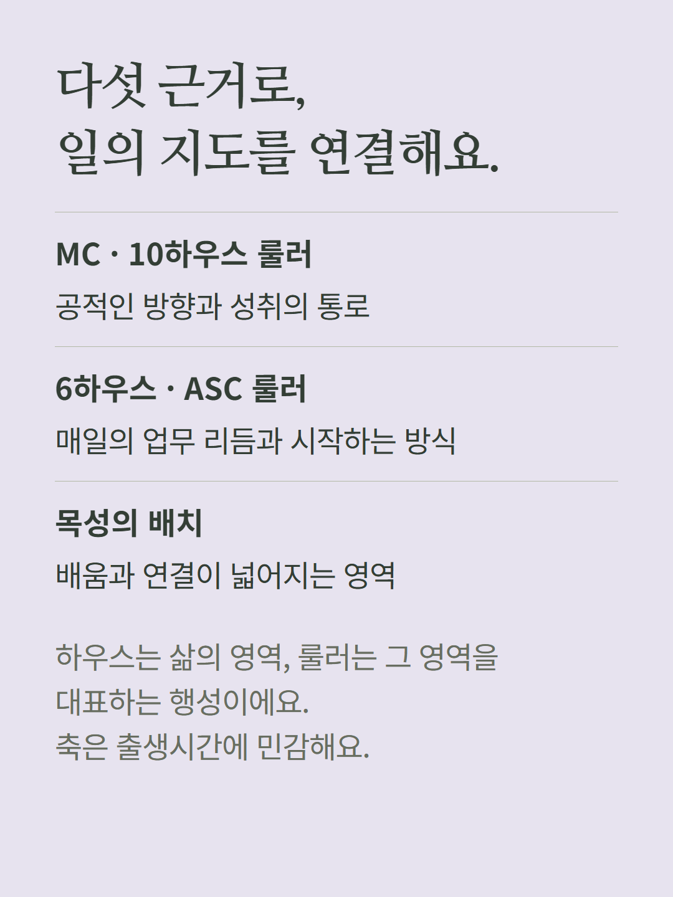
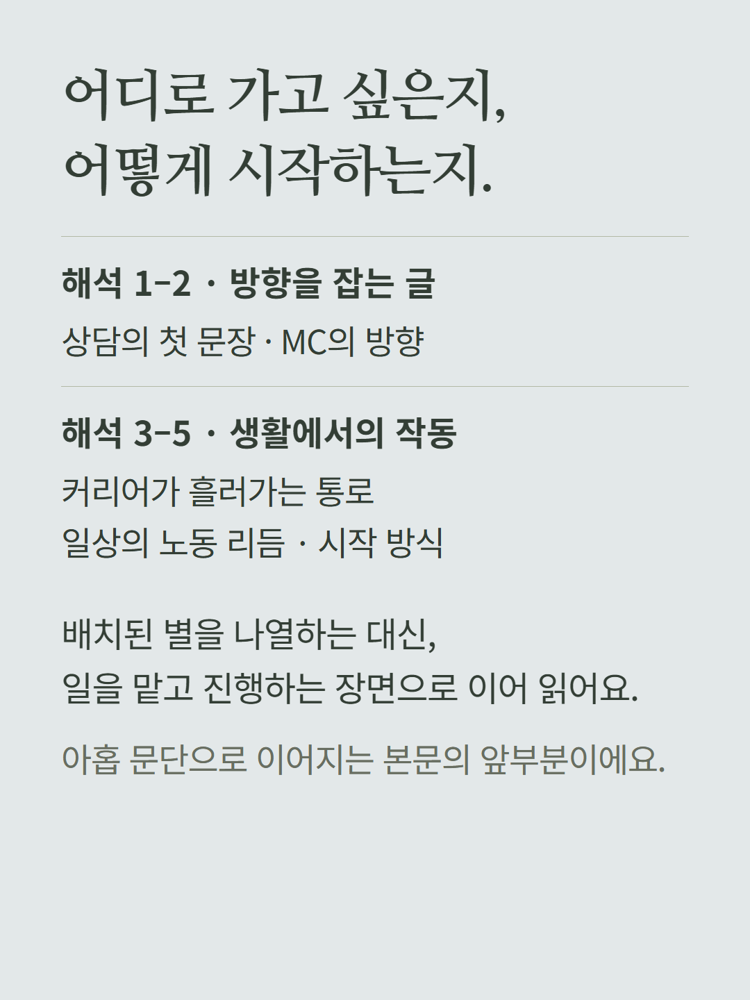
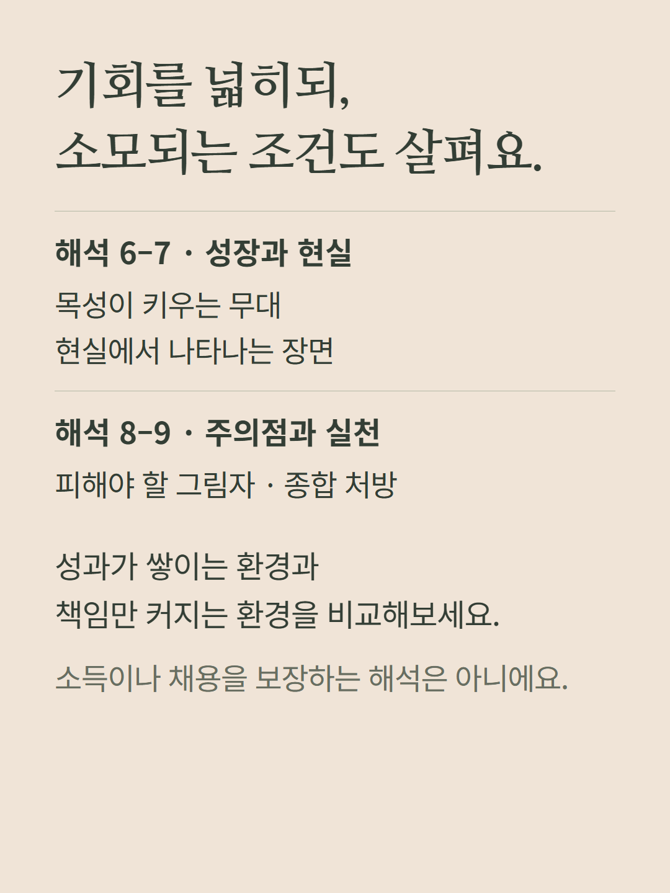
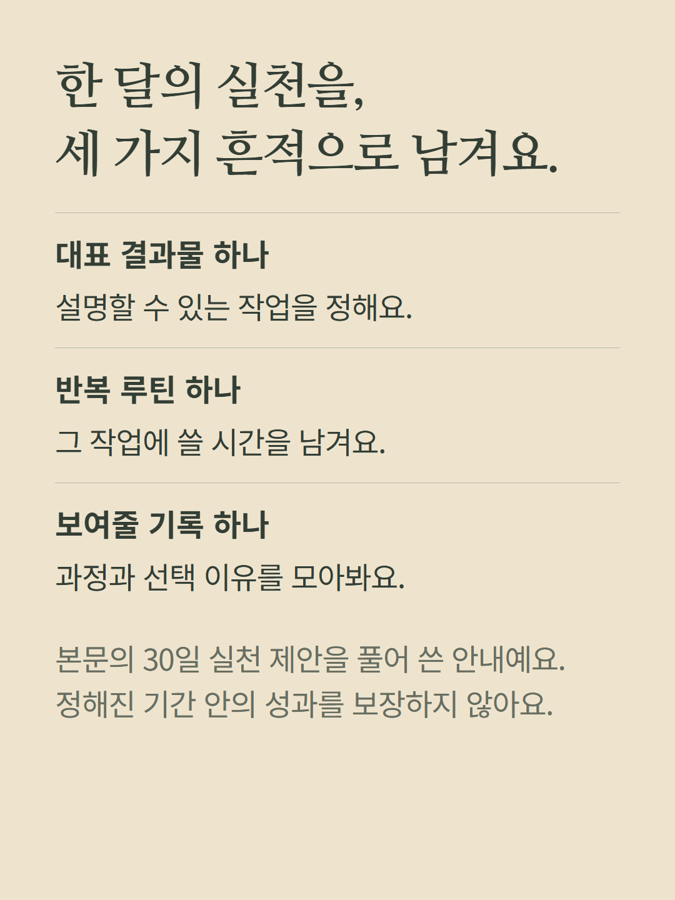
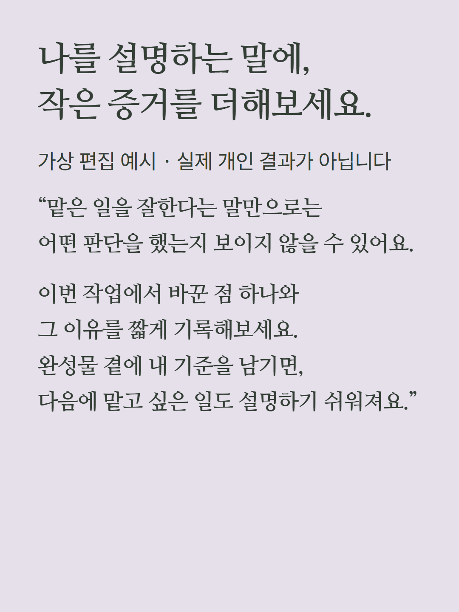

일반 점성술 화면의 봉인된 별의 방에서 개별 해금하는 일과 역할 리딩입니다. MC·10하우스 룰러·6하우스·ASC 룰러·목성의 배치로 아홉 문단의 해석과 환경·수익화·실천 포인트를 읽습니다. 직업·수익·취업 결과를 보장하지 않습니다. 출생시간·지역이 하우스와 축에 영향을 줍니다. 기본 심층 패키지와 다른 별의 방은 별도 항목입니다. 예시는 가상 편집이며 기존 가격·해금 정책을 따릅니다.